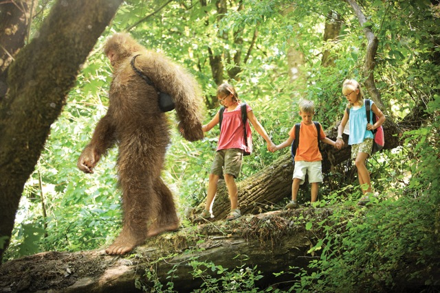

My Portfolio
About Me
I am a personal self-starter and an ambitious leader committed to the success of the teams I lead through the fostering of harmony, synergistic collaboration and consistent motivation. I also consider myself aptly attuned to the concerns of the communities in which I live and/or work and this trait influences the projects I am earnestly passionate about. I am particularly interested in improving the welfare of vulnerable women and children. I am sincere, easy-going with a calm temperament. This makes me strongly averse to conflict. I am a results oriented worker who is committed to executing tasks with meticulous diligence.
Coming to my part-time tuition job, over the passage of time, it has become more of my passion than something I do to earn extra pocket money. I have learned how fulfilling it can be to make someone learn something knew. Plus I have learned patience. Explaining some algebra concept for the millionth time has bought tolerance to my normally tempestuous nature.
I also have responsibility for cleaning the house on weekdays and lunch and dinner on weekends. Before I started those chores, I never valued my mom’s seamless running of the household. Now when I have to help my mom because age has slowed her down, I realize how tough it can get for a stay-at-home mom even. By giving a helping hand, I have come to realize how seriously I view responsibility.
My Hobbies
- Playing with children
- Watching the full moon and the stars in the night
- Reading books
- Adventuring 
- Networking

My Background
I am just a highschool graduate schooled from Uganda. I have worked for two years now, started from Rwanda and currently working in Kenya. I decided to take a class on programming because i am hoping to continue with block chain programming so i badly need the basic languanges.
I decided to join Moringa because i belive its the best in kENYA and i wont have to waste alot of time on theory, non-productive courses and work any other IT University offers but rather more on practicals.
Projects worked on
- Mar-Safaris is a website of my hotel in a place called Musanze in Rwanda and the link is,Mar-Safaris
- The Nature website talks about the Beauty of Nature and here is the linkNature
- myfavethings
- origin
- original